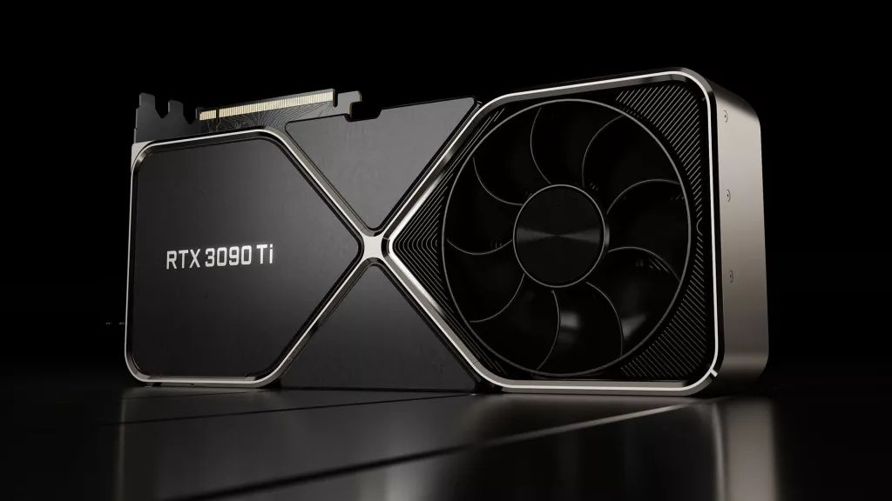

GPU, eller skjermkort, er den delen av datamaskinen som har ansvaret for alt du ser på skjermen. Hvis prosessoren er hjernen i maskinen, er skjermkortet selve kunstneren. Den tegner opp bilder, videoer og 3D grafikk lynraskt.
Uten en god GPU vil moderne spill hakke eller se ut som noe fra mange år tilbake. Den beregner lys, skygger og bevegelser i sanntid. I tillegg bruker programmer for videoredigering skjermkortet for å gjøre tunge oppgaver mye raskere. I dag brukes de også ekstremt mye til å trene opp kunstig intelligens, noe som krever enorm regnekraft.
For noen år siden var det et rent mareritt å kjøpe GPU. Rundt 2020 under pandemien og kryptoboomen forsvant skjermkortene fra butikkhyllene, og prisene skjøt i været. Folk betalte gjerne dobbel eller trippel pris av hva kortene egentlig var verdt fordi alle trengte dem.
Da jeg bygde min første PC i 2020, rammet dette meg hardt. Jeg bestilte et RTX 2060, og av et totalbudsjett på 15 000 kr gikk hele 7 000 kr utelukkende til grafikkortet. Og da var RTX 2060 det svakeste kortet i 20 serien! Prisene stabiliserte seg heldigvis mot slutten av 2022, men som sagt har vi nå lignende problemer for RAM og SSD på grunn av AI.
Når det gjelder skjermkort er det to store giganter som kjemper om markedet. Det er Nvidia med sine GeForce kort og AMD med Radeon. Nvidia er markedslederen og de er veldig populære på grunn av smarte funksjoner. De har for eksempel Ray Tracing som gir superrealistisk lys, og DLSS som bruker AI for å få spillene til å gli bedre.
På den andre siden har vi Radeon. De gir ofte mer ren ytelse for pengene. De er et solid valg for de som bare vil ha høy bildefrekvens i spill, uten å betale ekstra bare for merket til Nvidia.
Så hvorfor krangler folk så mye om dette på nettet? Det er akkurat som med Apple mot Android eller PlayStation mot Xbox. Det handler mest om merkelojalitet. Noen klager på at AMD har hatt problemer med programvaren sin, mens andre irriterer seg over at Nvidia priser kortene sine for høyt. Denne fanboy krigen skaper uendelige diskusjoner på nettet, men sannheten er at begge selskapene lager utrolig bra skjermkort uansett.

^ Eksempel bilde ^
kilder: Wikipedia